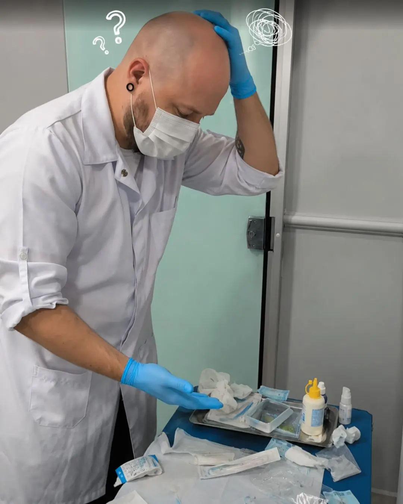
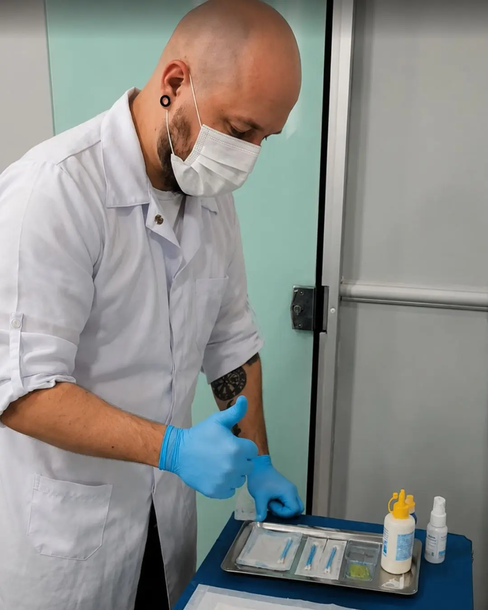

Quer mais previsibilidade
Atende há pouco ou muito tempo, mas quer uma rotina mais clara antes, durante e depois do procedimento.
O Rotina Segura reúne 20 capítulos e 5 ferramentas práticas para você colocar ordem em materiais, etapas e registros — e atender com mais controle, segurança e confiança profissional.
Quero colocar minha rotina em ordemAcesso imediato • Garantia incondicional de 7 dias


O Rotina Segura foi criado para body piercers que querem organizar materiais, etapas e registros com mais clareza — sem depender apenas da memória ou da correria do dia.
Atende há pouco ou muito tempo, mas quer uma rotina mais clara antes, durante e depois do procedimento.
Entende que pequenos improvisos podem comprometer a segurança, a experiência do cliente e sua reputação.
Deseja que o cliente perceba organização, cuidado e profissionalismo em cada etapa do atendimento.
Procura uma estrutura prática para aplicar o cuidado que já considera importante todos os dias.
Se você se reconheceu em pelo menos um desses pontos, o Rotina Segura foi criado para o seu momento profissional.
Quando tudo depende da memória, a rotina muda conforme a pressa. É aí que pequenos detalhes deixam de ser conferidos e o atendimento perde clareza.
Separar, conferir, proteger e registrar depende de você se lembrar de tudo.
Em dias corridos, a urgência toma o lugar de um processo claro.
Repetir algo há muito tempo não significa que ele foi revisado.
O Rotina Segura organiza o que hoje depende da memória em uma sequência prática de preparo, atendimento e encerramento.
Saiba o que conferir antes de começar.
Siga um fluxo mesmo nos dias corridos.
Mantenha o padrão com ferramentas práticas.
Não é fazer mais. É saber o que fazer, na ordem certa.
Os 20 capítulos e as 5 ferramentas práticas do Rotina Segura ajudam você a organizar o que conferir antes, durante e depois de cada atendimento.
Organize ambiente, bancada, materiais e conferências antes de receber o cliente.
Mantenha higiene, barreiras e materiais previstos em uma sequência clara.
Conduza o atendimento sem decidir cada etapa no meio do caminho.
Finalize, registre e reorganize o necessário para o próximo atendimento.
Não é uma lista de regras para decorar. É uma rotina para consultar, aplicar e repetir com mais segurança.
Além do protocolo principal, seu acesso inclui cinco ferramentas pensadas para ajudar você a conferir, registrar e manter o padrão no dia a dia do estúdio.

01 • PROTOCOLO PRINCIPAL
20 capítulos práticos para organizar preparo, atendimento e encerramento.
Pontos importantes para revisar sua rotina com mais clareza.
Acompanhe materiais e validades sem depender só da memória.
Uma base para registrar informações importantes do atendimento.
Organize o início e o fim do expediente com mais padrão.
Centralize o acompanhamento dos processos de esterilização.
Não é conteúdo para ficar salvo e esquecido. É material para apoiar decisões reais na rotina do estúdio.
O Rotina Segura não exige que você mude tudo de uma vez. Ele ajuda você a começar pelo que precisa de mais clareza hoje e evoluir sua rotina sem abandonar seu jeito de atender.
Você pode começar pelo preparo, pelos registros ou pela organização da bancada e avançar no seu ritmo.
O mais importante é saber o que conferir, proteger e registrar com os recursos que fazem parte da sua realidade.
Uma rotina clara existe justamente para que o essencial não dependa só da memória, da pressa ou do improviso.
Você só precisa decidir que o cuidado que já existe no seu atendimento merece uma estrutura à altura da sua responsabilidade.
Para chegar a um atendimento mais organizado, você precisaria reunir materiais, criar registros, montar checklists e transformar tudo isso em um padrão que realmente funcione no dia a dia.
O Rotina Segura coloca essa estrutura em um único acesso.
MATERIAIS INCLUÍDOS NO SEU ACESSO
Mas você não precisa pagar por cada peça para parar de trabalhar no improviso.
Em um único acesso, você recebe o protocolo completo e cinco ferramentas práticas para organizar materiais, etapas e registros com mais clareza no dia a dia.
ACESSO COMPLETO AO ROTINA SEGURA
De R$362
Hoje, na condição especial de lançamento:
R$67 à vista no Pix ou boleto
ou em até 9x de R$8,80 no cartão*
Protocolo completo + 5 ferramentas práticas
🔒 Acesso imediato • garantia incondicional de 7 dias
*Parcelamento sujeito às condições apresentadas no checkout da Hotmart.
Você não está comprando mais conteúdo. Está escolhendo uma estrutura para trabalhar com mais clareza, controle e confiança.
Profissionalismo não é tentar lembrar de tudo sempre. É ter uma rotina que continue funcionando quando o dia aperta, quando surgem imprevistos e quando você precisa atender com clareza.
Resolver cada etapa no meio do caminho, adaptar decisões na pressa e torcer para que nenhum detalhe importante fique para trás.
Saber o que preparar, conferir, registrar e encerrar com uma sequência clara antes mesmo de o cliente chegar.
A diferença aparece nos detalhes que o cliente talvez não saiba nomear — mas percebe quando deita na sua maca.

Tenha em um único acesso o protocolo completo e as ferramentas práticas para preparar, atender e encerrar cada atendimento com mais clareza.
R$67
À vista no Pix ou boleto
ou em até 9x de R$8,80 no cartão*
🔒 Pagamento processado pela Hotmart • acesso imediato
*Parcelamento sujeito às condições apresentadas no checkout da Hotmart.
Respostas diretas para você decidir com clareza se o Rotina Segura faz sentido para o momento profissional que vive hoje.
É um protocolo prático para body piercers, organizado em 20 capítulos e 5 ferramentas de implementação. Ele ajuda você a estruturar preparo, atendimento, registros e encerramento com mais clareza.
Sim. Ele foi pensado para quem quer construir uma base organizada desde os primeiros atendimentos e também para quem já atende, mas deseja revisar e padronizar a própria rotina.
Sim. Experiência é importante, mas muita coisa pode ficar dependente da memória e de hábitos antigos. O Rotina Segura ajuda a transformar conhecimento e cuidado em uma sequência mais clara e repetível.
Não. Ele não substitui formação profissional, exigências locais ou orientação de órgãos sanitários. É um material de apoio para você organizar e fortalecer sua rotina profissional.
A proposta é justamente diminuir a necessidade de decidir tudo no meio do atendimento. Você pode começar pelas ferramentas que fazem mais sentido para sua realidade e evoluir passo a passo.
Após a confirmação do pagamento, você recebe o acesso pela Hotmart. O protocolo e as ferramentas ficam disponíveis na plataforma para consultar quando precisar.
Você tem garantia incondicional de 7 dias. Dentro desse prazo, pode solicitar o reembolso diretamente pela Hotmart.
Se você quer parar de depender apenas da memória para manter o padrão, o Rotina Segura foi criado para esse momento.